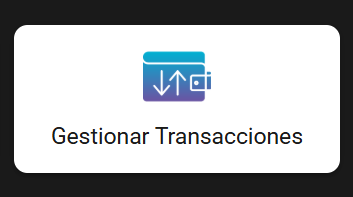
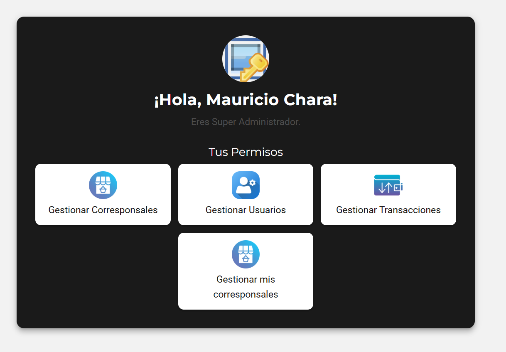
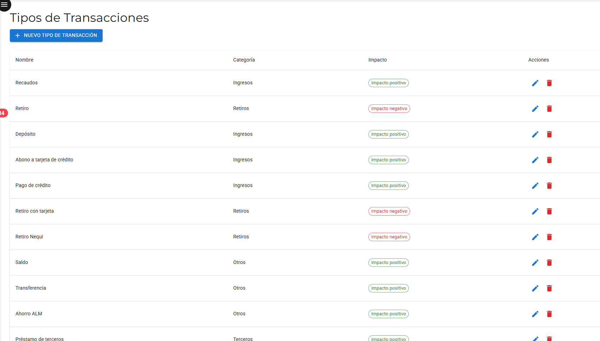
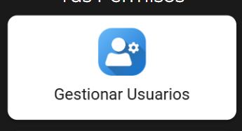
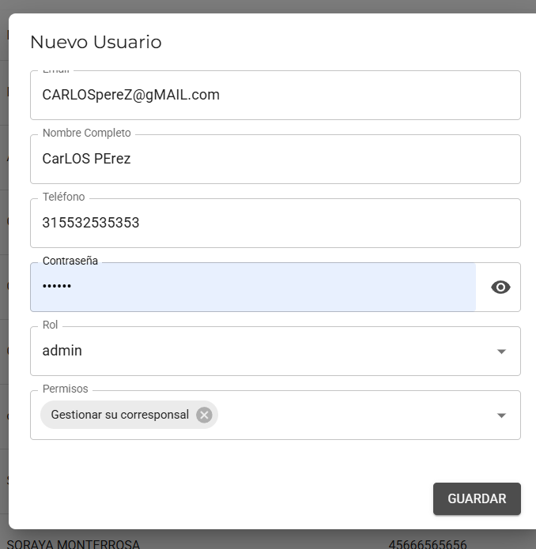
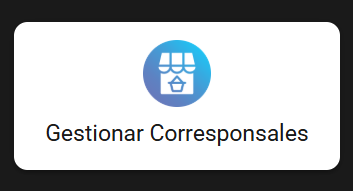
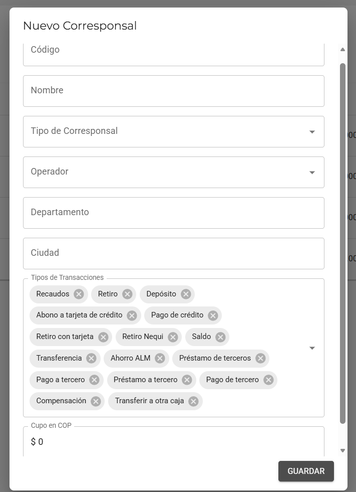
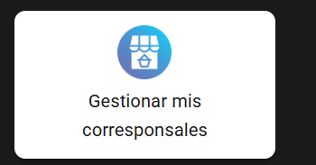
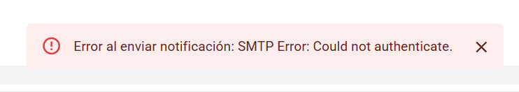

Cambios de etiquetas, cambios en código y diseño para el ROL SUPERADMIN.
1. Menú: Gestionar Transacciones CONTEXTO
Todo lo que sigue en esta pestaña es sobre este menú puntual dentro del rol SuperAdmin — seleccionando lo que vamos a editar:


Estado actual ESTADO ACTUAL
Hoy la pantalla "Tipos de Transacciones" muestra todos los tipos en una sola lista plana, sin agrupar por categoría, y con los botones de editar y eliminar activos en todas las filas — incluidas las que ya son parte de la lógica del sistema.

Mejoras a realizar
1.1 Cambios de nombre (renombrar) de algunos tipos de transacciones A PROGRAMAR
Actual
Etiqueta nueva
Abono a tarjeta de crédito
Pago Tarjeta de Crédito
Pago de crédito
Pago Cartera
Retiro con tarjeta
Retiro Tarjeta Débito
Retiro
Retiro en Efectivo
Depósito
Consignación
1.2 Quitar transacciones A PROGRAMAR
Transacción
Impacto
Acción
Ahorro ALM
Positivo
Eliminar
Transacción Prueba
Positivo
Eliminar
1.3 Agregar transacciones nuevas A PROGRAMAR
Transacción
Categoría
Impacto
Avance Tarjeta de Crédito
Retiros
Negativo
Otros Retiros
Retiros
Negativo
1.4 Nueva propuesta para menú TIPOS DE TRANSACCIONES A PROGRAMAR
Se necesita:
Bloquear edición/eliminación de las transacciones ya programadas (las de la lógica actual del sistema): sus botones de editar y eliminar deben quedar deshabilitados o no mostrarse, ya que son parte del código.
Organizar la tabla por categoría, con las categorías y transacciones exactamente como quedan en esta nueva propuesta de Tipos de transacciones.
Transacciones nuevas (cuando el banco autorice un nuevo servicio): este tipo de transacciones deben poder crear libremente. Una vez que una transacción nueva ya tenga movimientos registrados con ella, tampoco debería poder editarse ni eliminarse — igual que las del sistema — para no romper la integridad de los movimientos históricos que ya la usaron. Antes de tener movimientos, sí se puede editar o eliminar sin problema.
Tipos de transacciones
Nombre
Categoría
Impacto
Acciones
Ingresos
Consignación
Ingresos
Positivo
🔒 bloqueado (sistema)
Pago Cartera
Ingresos
Positivo
🔒 bloqueado (sistema)
Pago Tarjeta de Crédito
Ingresos
Positivo
🔒 bloqueado (sistema)
Recarga Nequi
Ingresos
Positivo
🔒 bloqueado (sistema)
Recaudos
Ingresos
Positivo
🔒 bloqueado (sistema)
Retiros
Avance Tarjeta de Crédito
Retiros
Negativo
🔒 bloqueado
Retiro Nequi
Retiros
Negativo
🔒 bloqueado (sistema)
Retiro Tarjeta Débito
Retiros
Negativo
🔒 bloqueado (sistema)
Retiro en Efectivo
Retiros
Negativo
🔒 bloqueado (sistema)
Otros Retiros
Retiros
Negativo
🔒 bloqueado
Retiro comisiones
Retiros
Negativo
🔒 bloqueado (sistema)
Otros
Saldo
Otros
Positivo
🔒 bloqueado (sistema)
Transferencia
Otros
Positivo
🔒 bloqueado (sistema)
Terceros
Pago de Tercero
Terceros
Positivo
🔒 bloqueado (sistema)
Préstamo de Tercero
Terceros
Positivo
🔒 bloqueado (sistema)
Pago a Tercero
Terceros
Negativo
🔒 bloqueado (sistema)
Préstamo a Tercero
Terceros
Negativo
🔒 bloqueado (sistema)
Compensación
Compensación
Compensación
Neutro/Especial
🔒 bloqueado (sistema)
Transferir a otra Caja
Transferir a otra Caja
Transferir a otra Caja
Neutro/Especial
🔒 bloqueado (sistema)
🔒 = editar/eliminar deshabilitados (todas quedan bloqueadas: las del sistema y también las nuevas, en cuanto se crean ya se consideran parte de la operación). Las filas en verde son las 2 transacciones nuevas a agregar.
2. Menú: Gestionar Usuarios CONTEXTO
Todo lo que sigue en esta sección es sobre este menú puntual dentro del rol SuperAdmin:

Estado actual ESTADO ACTUAL
Hoy el formulario "Nuevo Usuario" no obliga a diligenciar el Teléfono, y guarda el Nombre Completo y el Correo tal cual los escribe el SuperAdmin, sin normalizar mayúsculas/minúsculas. Eso permite que queden guardados registros como "CarLOS PErez" o "CARLOSpereZ@gMAIL.com".

Mejoras a realizar A PROGRAMAR
Teléfono obligatorio, con validación de formato telefónico (solo números, longitud válida para Colombia).
Normalizar mayúsculas/minúsculas automáticamente al guardar en los campos de nombre, apellido, ciudad (y similares): la primera letra de cada palabra en mayúscula y el resto en minúscula.
Correo siempre en minúsculas, sin excepción, al momento de guardar.
Cómo debe quedar NUEVO DISEÑO
Mismo formulario, pero al guardar los valores quedan normalizados automáticamente:
Tal como se escribió en el ejemplo ("CarLOS PErez" / "CARLOSpereZ@gMAIL.com"), el sistema corrige y guarda "Carlos Perez" / "carlosperez@gmail.com" sin que el SuperAdmin tenga que corregirlo manualmente.
3. Menú: Gestionar Corresponsales CONTEXTO
Todo lo que sigue en esta sección es sobre este menú puntual dentro del rol SuperAdmin:

Estado actual ESTADO ACTUAL
Así se ve hoy el formulario "Nuevo Corresponsal": los campos de texto no normalizan mayúsculas/minúsculas, el Código acepta cualquier texto, el Tipo de Corresponsal dice "Tipo1", el Operador no tiene un orden definido, y los Tipos de Transacciones se listan en burbujas grises desordenadas con una X para quitar cada una.

Mejoras a realizar A PROGRAMAR
Normalizar mayúsculas/minúsculas al crear un corresponsal, en nombre, apellido, ciudad (y similares): primera letra de cada palabra en mayúscula, resto en minúscula — misma regla que en Gestionar Usuarios.
Campo Código: solo numérico (ej. 12029, 65398).
Campo Tipo de Corresponsal: cambiar "Tipo1" por "Bancolombia". Más adelante se agregarán otros tipos de corresponsales.
Campo Operador: el listado de usuarios disponible debe ordenarse alfabéticamente por nombre, mostrando "NOMBRE (correo)", ej. ABEL PEREZ (abel@gmail.com), ANTONIO RUIZ (antonio@outlook.com).
Campo Tipos de Transacciones: cambiar el listado actual (burbujas grises desordenadas con X) por una lista agrupada por categoría, en orden alfabético, con un checkbox que indique si esa transacción está habilitada o no para ese corresponsal.
Cómo debe quedar NUEVO DISEÑO
Mismo formulario "Nuevo Corresponsal", con los campos corregidos:
Sugerencia para el nuevo diseño del nuevo formulario: mostrar este formulario en horizontal (no vertical) — al ser una aplicación web, no móvil, aprovecha mejor el ancho de pantalla y evita el scroll largo que tiene hoy. Aun así, debe seguir funcionando bien en móvil cuando se necesite; en ese caso los mismos campos se reacomodan en una sola columna.
Nuevo corresponsal
Ingresos
Retiros
Otros
Terceros
Compensación
Transferir a otra Caja
Cada categoría en orden alfabético por nombre de transacción, con un checkbox simple: en verde cuando está habilitada, sin color cuando no. "Retiro comisiones" no aparece en la lista (transacción de sistema, no visible/seleccionable aquí). Los valores marcados son los que por defecto deben heredar un nuevo CB.
4. Menú: Gestionar Mis Corresponsales A PROGRAMAR

ESTE MENÚ DESAPARECE PORQUE EL SUPERADMIN NO DEBE TENER NINGÚN CORRESPONSAL ASIGNADO.
5. Menú Parámetros del sistema A PROGRAMAR
Nuevo menú dentro de Rol SuperAdmin. Reúne los valores que hoy están quemados en varias partes del sistema (como el período de Freemium por vencer) para que se puedan editar sin tocar código. Ocupa todo el ancho de la pantalla, sin barra oscura de encabezado — igual al resto de las pantallas reales del SuperAdmin.
Configuración de membresía
Parámetro
Valor
Descripción
Días para alertar Freemium por vencer
Días antes del vencimiento para empezar a contactar al corresponsal.
Duración total del plan Freemium
Días desde el alta del corresponsal antes del downgrade automático.
Avisos previos al downgrade
Días antes del vencimiento en que se envía cada aviso.
Nota para el programador: esta tabla es el punto de partida; cualquier otro valor "quemado en código" que se detecte más adelante se agrega aquí como una fila nueva.
Catálogo de causas de diferencia en cierres (global)
Causas disponibles para el Cierre de Caja del Cajero. Por defecto quedan todas activas para cualquier CB que se cree — cada Admin puede desactivar las que no le apliquen desde su propio menú Parámetros del Sistema.
Causas sugeridas por cajeros
Cuando un cajero elige "Otra" al cerrar caja y escribe su propio texto, aparece aquí — ordenadas por ámbito y dirección — para que el SuperAdmin decida si la incorpora al catálogo global.
Bugs reportados
Rol: SuperAdmin
Bug 1: Error SMTP al activar/desactivar Premium A CORREGIR
Al marcar un CB como Premium (o al quitárselo), el sistema muestra este mensaje de error y aparentemente el estado no cambia:

Sin embargo, si se refresca la página, el CB sí queda con el estado correcto (Premium activado o quitado, según la acción). El mismo comportamiento ocurre en ambos sentidos: activar y desactivar.
Causa probable: la acción de cambiar el estado Premium sí se guarda bien en la base de datos, pero dispara además un envío de notificación (correo) por SMTP, y ese envío está fallando por un problema de autenticación con el servidor de correo ("Could not authenticate"). El error de ese envío se le está mostrando al usuario como si toda la operación hubiera fallado, cuando en realidad solo falló el correo, no el guardado.
Sugerencia para el programador:
Separar el envío de la notificación por correo de la actualización del estado Premium, para que un fallo de SMTP no bloquee ni haga parecer fallida la acción principal.
Revisar las credenciales/configuración SMTP para corregir el error de autenticación de fondo.
Si el correo falla, mostrar un aviso distinto (ej. "Premium actualizado, pero no se pudo enviar la notificación por correo") en vez del mensaje de error genérico actual.